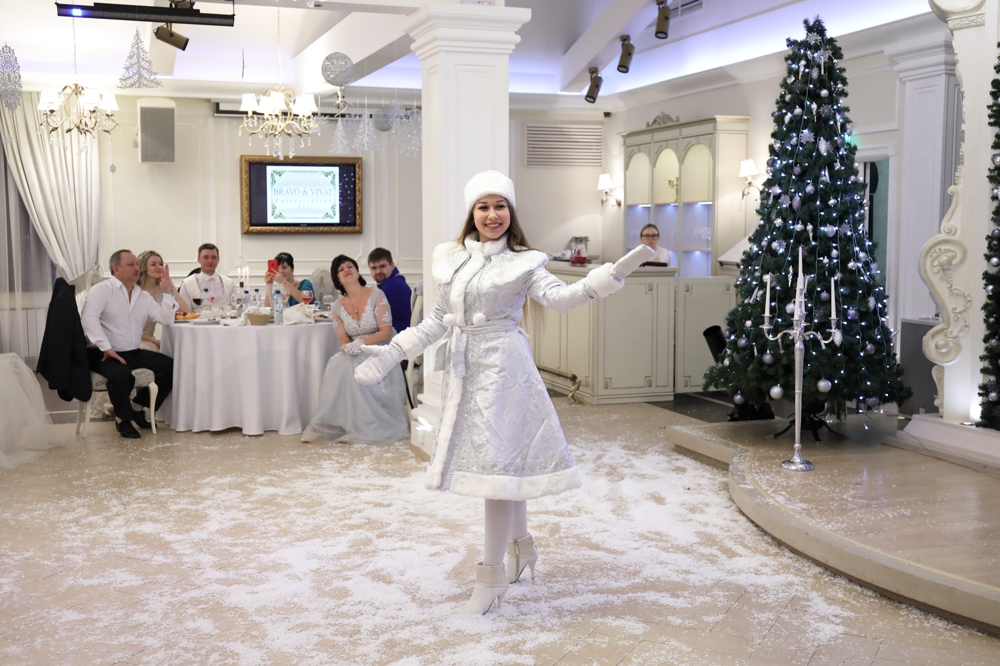

Дед Мороз на корпоратив в Нижнем Новгороде выходит ко взрослому или смешанному залу. Это не утренник для группы в саду. В кафе и ресторане пара ведёт тост, конкурс и контакт со столов. Сценарий «Волшебство стихий» на эти страницы не ставится. Границы одни: без пошлости, без политики, без темы войны. До 1 декабря 2026 формат выбирают по задаче зала, не по вывеске.
Страницу читает управляющий, HR или менеджер зала. Им страшно, что номер разъедется в детский хоровод. В декабре 2025 фраза «дед мороз в ресторан» в городе дала 0 показов. Состав поэтому лежит здесь, а не в поиске. На дом этот сайт не выезжает. Сад и школу здесь не продают.

Пара выходит к уже сидящим гостям. Тост и короткие стихи называют компанию и повод вечера. Интерактив идёт с мест. Общее фото остаётся у тех, кто рядом. Сцена для этого не нужна.
Флешмоб или хоровод ставят, только если между столами можно встать. В узком зале их нет. Остаются тост, жест и фото. Банкет при этом не встаёт. Минуты согласуют так, чтобы официанты не несли горячее через центр.
Шоу на 30 минут добавляет живой куплет. Поёт один из пары. Минус лежит на флешке. Звук берёт зал или своя колонка. Фонограмму в лицо не включают. Конкурсы идут без тяжёлого реквизита и собраны под взрослый зал. Дальше фокус, предсказание и символический подарок участнику. Подарки заказчика вручают, если их отдали заранее.
Имена, повод и темы, которых лучше не касаться, собирают до даты. Без списка тост будет общим. Угадать компанию в зале не обещают. Артисты трезвые и приезжают ко времени. Смены с 9:00. Часы, когда берут трубку, не публикуют.
Рекомендация: пришлите запретные темы до выхода, не в зале. Тогда конкурс не заденет то, что компания закрыла заранее.
Коротко о зале: пара в Нижнем Новгороде собирает сидящих гостей тостом, а не хороводом сада. Имена и запретные темы нужны до даты, иначе поздравление останется общим. Конкурс взрослого зала не заменяет детский сценарий. Флешмоб возможен только при проходе между столами. В узком зале остаются тост, жест и фото.
На корпоративе, в кафе и в ресторане не будет детского утренника и сценария для сада. «Волшебство стихий» сюда не копируют. Аниматоров, ростовые фигуры и отдельного фотографа эти страницы не продают.
Не будет пошлости, политики и темы войны. Костюм не из мешка. Пайетки и классика — один формат и одна сумма, не два прайса. Доплаты за образ нет.
Сумму на 31 декабря и 1 января называет Надежда при брони. После 1 декабря сумма зависит от даты. Отдельную новогоднюю цифру здесь не ставят. Оплата для юрлица — чек самозанятого и безнал. НДС и УПД не обещают. На три корпоратива и больше есть отдельные условия. Процент скидки не назван, поэтому цифры скидки нет.
Рекомендация: не просите в короткий выход песню и обход всех столов. Песня начинается в шоу. Обход столов — отдельный час.
Чего ждать не стоит: детский сценарий, пошлость, политику и тему войны на банкет не ставят. Куплет не входит в короткий выход. Обход каждого стола не прячется внутри встречи у двери. Новогодняя ночь в опубликованный прайс до 1 декабря не входит. Процент на несколько корпоративов в открытую не назван.
Банкет, кафе и ресторан Нижнего Новгорода рассчитаны на взрослый или смешанный зал. Группа в саду — другой заказ. Её сценарий на эти страницы не переносят. Дом, сад и школа здесь не продаются. Смешанный зал значит, что дети могут сидеть с родителями за столом компании. Это не группа сада со своим утренником.
| Вопрос | Банкет, кафе, ресторан | Чего на этих страницах нет |
|---|---|---|
| Кто в зале | Взрослые или смешанный зал компании | Группа сада как отдельный заказ |
| Программа | Тост, конкурс, контакт со столов | Сценарий «Волшебство стихий» |
| Хоровод | Только если между столами есть проход | Хоровод по сценарию утренника |
| Конкурсы | Без тяжёлого реквизита, не из утренника | Перенос садовой программы в ресторан |
| Куда ехать | Нижний Новгород и область, цена формата | Выезд на дом с этой страницы |
Хоровод «как в саду» на корпоратив не обещают. Если проход есть, в коротком выходе могут собрать флешмоб или круг. Если зал узкий, круг не делают. Вечер после тоста идёт дальше. Конкурсы шоу тоже не берут из утренника.
Названия залов, куда уже выходили: Ариэль, Колокол, Наршараб и Онегин. Это имена площадок, не отзывы. Цитат, дат выходов и числа гостей в источниках нет. Полные вывески «Миража» и «Джамэла» не подтверждены, поэтому здесь их нет.
Рекомендация: если за столами сидит смешанная компания, напишите это до даты. Текст останется про зал компании. Детский сценарий из-за этого не включается.
Вердикт для зала: корпоратив, кафе и ресторан Нижнего Новгорода не получают сценарий группы в саду. Хоровод как на утреннике сюда не переносят. Круг возможен лишь при проходе между столами. В узком зале остаются тост, жест и фото. Дом, сад и школа этой страницей не заказываются.
Если гости уже сидят, выбирают одну задачу, а не «Деда Мороза вообще». Цена до 1 декабря 2026 одна для кафе, ресторана и корпоратива. Пайетки или классика сумму не меняют. Нижний Новгород, Дзержинск, Арзамас, Кстово и остальная область идут по цене формата. Отдельной надбавки в прайсе нет.
| Формат | Минуты и цена | Когда зал уже сидит |
|---|---|---|
| Выход | 20–25 минут, 14 370 ₽ | Тост между подачами, интерактив с мест, общее фото. Песни нет |
| Шоу | 30 минут, 19 640 ₽ | Всё из выхода плюс куплет, конкурсы, фокус, предсказание и подарок |
| Welcome | 60 минут, 26 480 ₽ | Сначала порог, пока гости входят, затем то же шоу. Не обход каждого стола |
| По столикам | 60 минут, 37 900 ₽ | Имя, шутка и фото у стола. Номера в центре нет. Банкет не стопорится |
Для куплета в шоу нужен звук: флешка, аппаратура ресторана или своя колонка. Если своего звука в кафе нет, колонку согласуют до даты. Двадцати минут на посадку гостей мало, поэтому порог берёт Welcome, не короткий выход.
В часе за 37 900 ₽ у стола называют имена, говорят короткий тост, шутят и фотографируются. Список по столам нужен до даты. Число столов называют при брони. Если за час все столы не обойти, Надежда говорит это заранее. Число гостей в прайс не закладывают.
Если первое окно занято, день не отказывают. Смотрят другое время в тот же день. Для юрлица остаются чек самозанятого и безнал.
Рекомендация: сидящий зал без песни закрывает выход. Нужен куплет — шоу. Гости ещё входят — Welcome. Нужно имя у каждого стола — отдельный час по столикам, не довесок к встрече.
Как выбрать минуты: между подачами хватает выхода на 20–25 минут за 14 370 ₽, без куплета. Живой куплет начинается в шоу за 19 640 ₽. Встреча у двери — час за 26 480 ₽, и она не обходит все столы. Личное слово у стола — отдельный час за 37 900 ₽. Один час две эти работы не склеивает.
Сумму на вашу дату до 1 декабря 2026 берут из выбранного формата. На 31 декабря и 1 января её называет Надежда при брони: 8 (952) 451-65-79. Дубль можно отправить во ВКонтакте, адрес https://vk.ru/ded.moroz.nnov. Дата не считается занятой, пока время не подтвердят. Если окно занято, ищут другую пару в тот же день.
Четыре карточки с минутами стоят на главной. Зал ресторана разобран на странице Деда Мороза в ресторан. Куплет и конкурсы взрослого зала — на странице шоу. Дом, сад и школу с этих адресов не заказывают.
Нет. Хоровод по сценарию утренника на корпоратив, в кафе и в ресторан не ставят. Круг или флешмоб возможен только если между столами есть проход. В узком зале остаются тост, жест и фото, банкет не встаёт.
Да. Название компании, повод и темы, которых лучше не касаться, собирают до даты. Без списка тост будет общим. Угадать компанию в зале не обещают. Границы и так закрыты: без пошлости, без политики, без темы войны.
Нет. Эти страницы ведут взрослый или смешанный зал. Сценарий «Волшебство стихий» сюда не копируют. Сад, школа и дом здесь не продаются. Дети за столом компании не превращают банкет в группу сада.
В выходе за 14 370 ₽ песни нет: 20–25 минут собирают тост и фото. Живой куплет есть в шоу за 19 640 ₽ и во Welcome за 26 480 ₽. Минус ставят с флешки, со звука зала или со своей колонки. Час по столикам за 37 900 ₽ сцену и куплет не держит.
Welcome за 26 480 ₽ встречает у двери и затем даёт шоу в зале. По столикам за 37 900 ₽ идёт от стола к столу и номер в центре не держит. Короткий выход за 14 370 ₽ каждый стол не обходит. Если нужны и порог, и личное слово, это два формата.
Надежде, 8 (952) 451-65-79. Нужны дата, зал и формат. Для юрлица — чек самозанятого и безнал. НДС и УПД не обещают. Смены с 9:00. Часы трубки не публикуют. Если окно занято, смотрят другое время в тот же день.